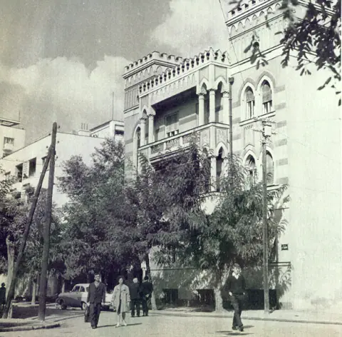
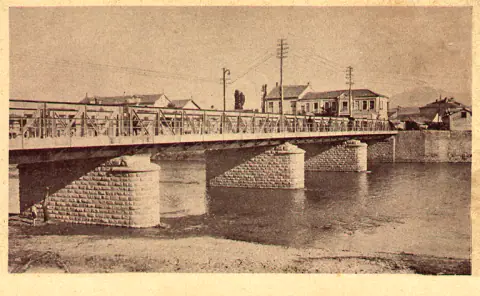
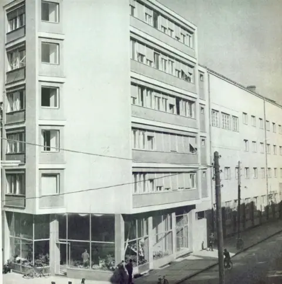
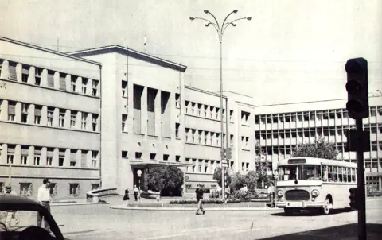

Stari orientacijski zemljevid
38 znamenitosti na starem načrtu Skopja. Dotaknite se točke ali jo kliknite, da vidite fotografijo.



Arabska hiša

Betonski most

Bit pazar

Glavna pošta

Mestna bolnišnica

Mestna plaža

Daut-pašin hamam

Leseni most


Železni most

Železniška postaja


Invalidski dom

Kamniti most

Katoliška cerkev

Kuršumli han

Mustafa-pašina mošeja

Narodna banka

Narodna knjižnica

Oficirski dom


Trg Makedonija

Trg svobode

Pošta 2

Urni stolp

Sejmišče


Sv. Dimitrij

Sveti Spas


Skupščina Makedonije

Spomenik padlim borcem

Stara glavna ulica

Študentski dom

Trdnjava Kale

Gledališče

Ul. Koča Racina

Ul. 11. oktobra

Filozofska fakulteta

Hotel Makedonija
Panorama